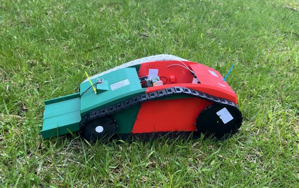

What It Does
This robot autonomously navigates a user-defined GPS coordinate path along a beach, sifting through sand with a conveyor belt and plastic mesh to separate microplastics and small debris into an onboard collection bin. It charges during the day via a solar docking station and operates at night when the beach is clear.
The project spans mechanical design (3D-printed tank chassis + conveyor), electronics (custom PCB, motor drivers, sensor fusion), and software (GPS waypoint navigation in C++ on ESP32).

The Problem
Millions of tonnes of plastic enter the ocean annually. Fragments wash onto beaches daily, where they break into microplastics that persist for thousands of years. Existing solutions — like the BeBot ($55,000 USD) or PTTEP robot — are remote-controlled, expensive, and not autonomous. A low-cost, autonomous prototype was needed to validate the core concept within a $100 budget.
Design Approach
Three designs were evaluated and scored against criteria including functionality, reliability, safety, aesthetics, weight, and cost. The selected design — Design 2 — scored highest by combining the sifting and collection mechanism into one compact body.
Tank Tracks
More surface contact than wheels — prevents sinking into soft sand.
Conveyor + Mesh
2mm plastic mesh sifts sand, carrying debris to an internal collection bin.
GPS Waypoints
NEO-6M GPS + QMC5883L compass enables autonomous path-following between set coordinates.
Obstacle Detection
Ultrasonic sensor halts the robot if a person or object is within 10cm.
Technical Implementation
Microcontroller: Upgraded from Arduino Mega to ESP32-C3 SuperMini — built-in Wi-Fi and Bluetooth eliminates the need for a separate BT module, reducing size and cost. A web server hosted on the ESP32 allows coordinate input from any device on the same network.
Custom PCB: Designed and manufactured via JLCPCB to consolidate all component connections, eliminating rat's-nest wiring and improving reliability and compactness.
| Microcontroller | ESP32-C3 SuperMini (Wi-Fi + BT built-in) |
| GPS Module | NEO-6M — 2.5m accuracy, 5 fixes/sec |
| Compass | QMC5883L — 1–2° accuracy |
| Drive Motors | 2× DC 6V 133RPM 4.5kg·cm geared motor |
| Mechanism Motors | 2× N20 100RPM geared motors |
| Motor Driver | L298N dual H-bridge |
| Power | 2× 18650 Li-ion in series (7.4V, 18Wh) + 2S BMS |
| Chassis | PLA 3D printed (±0.1mm tolerance), multi-part glued shell |
| Weight | ~1.8kg prototype |
Navigation logic: On boot, the robot registers a home coordinate. The user sets waypoints via the Wi-Fi web interface. The ESP32 calculates bearing using the compass and distance using the GPS, running a correction loop to steer toward each coordinate before advancing to the next.
Testing & Results
Speed Test: Theoretical top speed calculated at 0.377m/s using motor RPM and driver gear circumference. Actual average across three 1m sand runs: 0.41–0.44m/s — exceeded prediction due to battery voltage slightly above rated.
GPS Test: Smartphone GPS (±5m) proved less accurate than the NEO-6M (±2.5m), making a meaningful comparison impossible. A more precise reference instrument would be needed for full validation.
Rotation Test: Robot rotated well on concrete and wood. On sand, excess traction and the long chassis-to-width ratio prevented in-place tank steering — the key mechanical limitation identified during beach testing.
Challenges & Iteration
3D Print Warping
First shell print failed due to a cold heat plate causing warping. Reprinted with corrected bed temperature — both halves successfully joined.
Motor Torque Insufficient
Original 2.5kg·cm motors couldn't drive the loaded chassis. Replaced with 4.5kg·cm motors (sourced from AliExpress) — nearly double the torque.
Oscillator Mechanism Failure
First sifter oscillator applied force to one side, causing tilting instead of reciprocating motion. Redesigned with a long push-rod and rubber return spring for reliable oscillation.
Microcontroller Swap
Switched from Arduino Mega to ESP32-C3 SuperMini — eliminated the Bluetooth module, reduced footprint, added Wi-Fi web server control. Burned through ~25 ChatGPT coding iterations to get GPS navigation code stable.
Custom PCB
Replaced breadboard wiring with a custom PCB (JLCPCB). Eliminated connection failures, improved compactness and repairability.
Future Improvements
Shorter Chassis
Reduce length-to-width ratio so the robot can tank-steer on sand without wheel slip.
Solar Charging Station
Add a docking station for daytime solar charging — enabling full night-shift autonomous operation.
RTK GPS
Replace NEO-6M with an RTK module for centimetre-level positioning accuracy.
Obstacle Sensors
Add multiple ultrasonic or IR sensors for 360° obstacle avoidance rather than front-only detection.